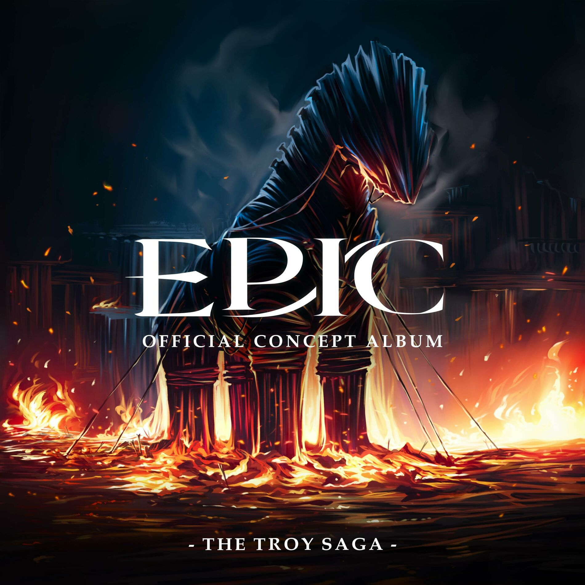

| Volle Kraft vorraus | |
|---|---|
|  | |
| Song Information | |
| Song Nr. | 3 |
| Akt (Saga) | Akt 1 (Troja Saga) |
| Gesungen von: | Michael Hinterlechner |
| Epic: German Ensemble | |
| Charaktere | Odysseus |
| Eurylochus | |
| Polites | |
| Griechische Soldaten | |
| Übersetzt von | |
| Chronologie | |
| Vorheriger | Nur ein Mann |
| Nächster: | Off'ne Arme |
Volle Kraft vorraus
Volle Kraft vorraus ist der dritte Song der Troja Saga. Dieser Song zeigt, wie Odysseus und seine Crew die Heimreise antreten. Auf dem Weg müssen sie nach einem Ort suchen, um Nahrung zu Jagen, um die 600 Man an Bord zu füttern.
Songtext
| Original Text | Deutscher Text |
|---|---|
|
[ODYSSEUS, SOLDATEN]
Six hundred men, six hundred men under my command With only one goal in mind Make it back alive to our homeland Six hundred men, six hundred miles of open sea But the problem's not the distance It's what lies in between And Ithaca's waiting Ithaca's waiting My kingdom is waiting The kingdom is waiting Penelope's waiting for me So full speed ahead, full speed ahead [EURYLOCHUS, SOLDATEN] Captain, Eurylochus Six hundred men Six hundred men Six hundred men with big mouths to feed, and we've run out of supplies to eat Curse the war, our food store's depleted Six hundred men Six hundred men Six hundred reasons to take what we can So captain, what's the plan? Captain, what's the plan? [ODYSSEUS, SOLDATEN] Watch where the birds fly Watch where the birds fly They will lead us to land They will lead us to land There we'll hunt for food, my second in command Now full speed ahead, full speed ahead [EURYLOCHUS & SOLDATEN] We're up, we're off, and away we go We're up, we're off, and away we go We're up, we're off, and away we go [POLITES] Captain [ODYSSEUS] Polites! [POLITES] Look! There in the distance, I see an island I see a light that faintly glows Maybe they're people lighting a fire Maybe they'll share some food, who knows? [ODYSSEUS] Something feels off here I see fire but there's no smoke [EURYLOCHUS] I say we strike first, we don't have time to waste So let's raid the place and- [ODYSSEUS] No Polites gear up, you and I'll go ahead [POLITES] You and I'll go ahead [ODYSSEUS, EURYLOCHUS] We should try to find a way no one ends up dead We don't know what's ahead [ODYSSSEUS, SOLDATEN, ALLE] Give me til sunrise, and if we don't return Then six hundred men can make this whole place burn Now full speed ahead Full speed ahead Full speed ahead We're up, we're off, and away we go We're up, we're off, and away we go Full speed ahead We're up, we're off, and away we go We're up, we're off, and a- Full speed ahead |
Trivia
- Der Song wurde in C moll und im 4/4 Takt geschrieben.
- Das ist der erste Song aus Epic der gepostet wurde, auch wenn es eine sehr frühe Version war.